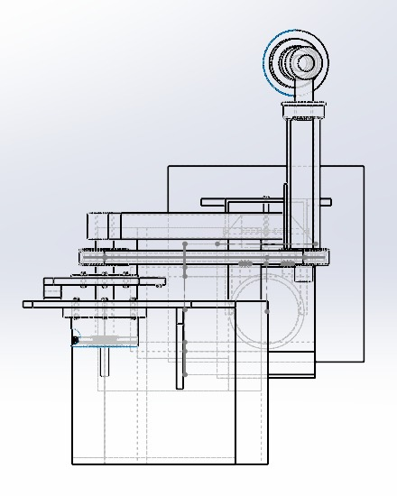
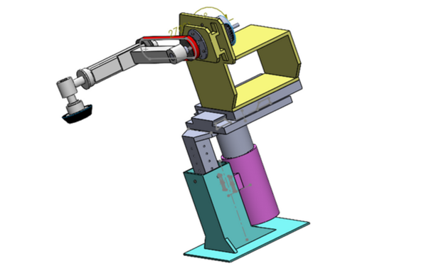
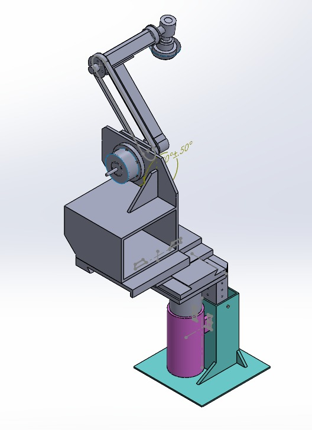

PROJECT
ROBOTIC ARM END-EFFECTOR



PROJECT OVERVIEW
Development of a multi-finger adaptive gripper for handling irregular geometric shapes. Stress tested using FEA analysis for optimal performance in industrial automation applications.
TECHNICAL SPECIFICATIONS
- Type: Multi-finger Adaptive Gripper
- Fingers: 3 articulated fingers
- Grip Range: 20mm - 80mm
- Force: Adjustable gripping force
- Material: Aluminum alloy
- Analysis: FEA Stress Testing
DESIGN FOCUS
- Adaptive gripping for irregular shapes
- Stress distribution optimization
- Lightweight design
- Easy maintenance and replacement
APPLICATIONS
Suitable for pick-and-place operations, assembly lines, and material handling of irregular objects in industrial automation environments.